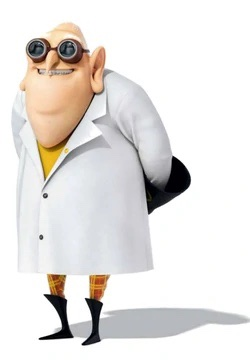

Dr. Joseph Albert Nefario, most commonly referred to as Dr. Nefario (born July 28, 1931), is the secondary tritagonist of the Despicable Me franchise, serving as the tritagonist of Despicable Me, a major character in Despicable Me 2, a cameo character in Minions, the unseen overarching protagonist of Despicable Me 3, one of the two overarching protagonists of Minions: The Rise of Gru (the other being Marlena Gru), and will return in some captivity in Despicable Me 4. He is Gru's gadgeteer, residing in his underground lair and laboratories. He builds and designs most of Gru's machines. Gru and Dr. Nefario seem to have been trying to shock the world with "The True Crime of the Century" for several years.
Although Nefario has doubts about Gru's plans due to lack of funds, and his new found love for his adopted daughters, he still considers him to be "one of the greats" in the supervillain world. Dr. Nefario also has terrible hearing, mistaking Gru's orders for "dart gun" and "cookie robots" as "fart gun" and "boogie robots", respectively. He is briefly El Macho's right-hand man and main henchman. In Despicable Me 3, he is frozen in carbonite, probably due to a Minion accident. In Minions: The Rise of Gru, he is portrayed as the owner of a record store that Gru goes to called Criminal Records, where he crafts gadgets as a side-gig.
| Gender | Male |
| Age | 79 |
| Hair color | Grey |
| Occupation | Gru's gadget man. Owner of Criminal Records (formerly) |